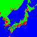
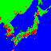
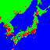

We Are Typhoon
Ludum Dare 49, 2021/10/01, "Unstable"
(Allow autoplay for music!)
Instructions
Control the typhoon passing through Japan / Korea. (WASD or mouse)
Typhoon naturally drifts toward northeast.
Staying on ocean = gaining power (less pressure).
Touching a land or city = losing power (more pressure).
Game ends when it reaches the northeast corner or becomes too small.
You can aim for either minimizing or maximizing the casualties.
Source Code

 
